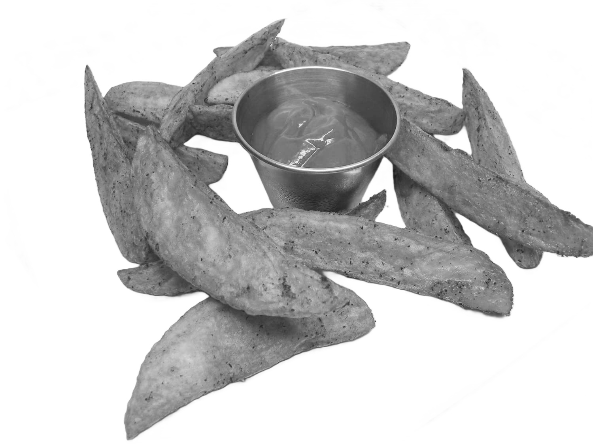
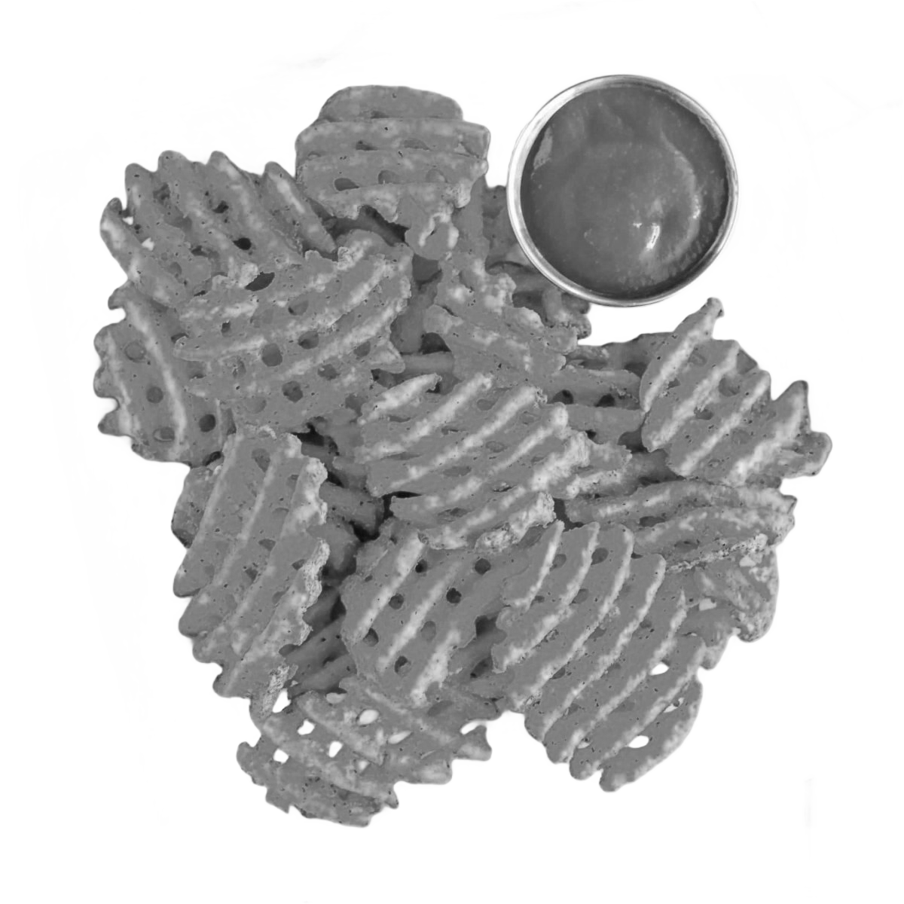

Hranolky jsou ikonickým a oblíbeným pokrmem po celém světě. Jsou vyrobeny z brambor, které jsou krájeny na tenké proužky a poté smaženy nebo pečeny, dokud nejsou křupavé a zlatě hnědé. Tato lahodná pochoutka je často podávána jako příloha k hlavnímu jídlu nebo jako samostatné občerstvení.
Hranolky mají svůj původ v Belgii, kde se poprvé začaly vyrábět v 17. století. Od té doby se staly neodmyslitelnou součástí rychlého občerstvení a restaurací po celém světě. Jejich jednoduchá, ale přitom neodolatelná chuť a křupavá textura oslovuje lidi všech věkových kategorií.
Typy hranolek
-

Steakové hranolky
Steakové hranolky jsou silnější a širší než klasické hranolky. Jsou často podávány jako příloha k steakům nebo dalším masovým pokrmům. Díky větší tloušťce mají měkký a nadýchaný vnitřek.
-
Crinkle-cut hranolky
Crinkle-cut hranolky mají zvlněný tvar, který vzniká speciálním krájením brambor. Tento tvar přidává hranolkům extra křupavost a zvyšuje jejich atraktivitu.
-
Shoestring hranolky
Shoestring hranolky jsou velmi tenké a křupavé. Jsou často podávány jako součást salátů nebo jako ozdoba k různým pokrmům. Díky své tenkosti jsou rychle usmažené a velmi křupavé.
-

Waffle hranolky
Waffle hranolky mají tvar připomínající vafle, což je dosaženo speciálním kráječem. Jsou křupavé zvenčí a měkké uvnitř, a jejich tvar poskytuje zajímavou texturu a větší povrch pro koření nebo dipy.